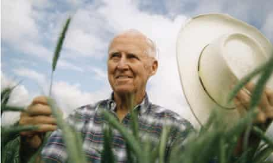

FREDERICK LORD LUGARD
Former Governor General of Nigeria
The accomplishments of Sir Fredrick Lugard
- Frederick John Dealtry Lugard, 1st Baron Lugard (1858-1945), was a British imperialist and colonial administrator in Africa. He made significant contributions to the theory and practice of the British colonial policy of indirect rule.
- Frederick Lugard was born on Jan. 22, 1858, of missionary parents in India. He attended the Royal Military College, Sandhurst, England. He obtained a commission in 1878 and returned to India, where he participated in the Afghan War of 1879-1880. In 1885 he accompanied the Indian contingent to the Sudan, joining the Suakin campaign to relieve Khartoum; in 1886 he joined military operations in Burma.
- In 1887 Lugard returned to England, but unable to resume his commission for medical reasons and despairing over an unhappy love affair, he set out for the east coast of Africa. In 1888 he arrived in Mozambique, where he entered the employ of the African Lakes Company, for whom he commanded a mission to Lake Nyasa to relieve a trading station besieged by Arab slave traders.
- In 1906 Lugard resigned as high commissioner and the following year accepted an appointment as governor of Hong Kong, where he remained until 1911. Then, in 1912, he returned to Nigeria as of both the Northern and Southern protectorates, charged with amalgamating the two territories into a single unit.
NORMAN .E. BORLAUG
The man who saved a billion lives

Normans Biography
- Born in 1914 Cresco, Iowa
- Leaves his family's farm to attend the University of Minnesota, thanks to a Depression era program known as the "National Youth Administration
- Has to stop school and save up more money. Works in the Civilian Conservation Corps, helping starving Americans. "I saw how food changed them", he said. "All of this left scars on me.
- Finishes university and takes a job in the US Forestry Service
- Marries wife of 69 years Margret Gibson. Gets laid off due to budget cuts. Inspired by Elvin Charles Stakman, he returns to school study under Stakman, who teaches him about breeding pest-resistent plants.
- Tries to enroll in the military after the Pearl Harbor attack, but is rejected. Instead, the military asked his lab to work on waterproof glue, DDT to control malaria, disinfectants, and other applied science.